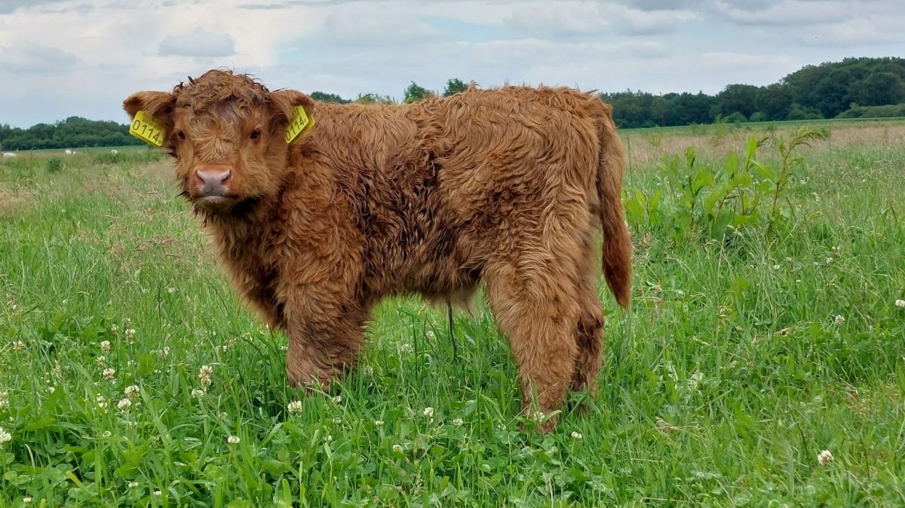

Home
Klik hier voor de wikipedia pagina. Op deze pagina kun je van alles vinden over koeien. Van soorten koeien tot waar ze leven. Op de pagina algemene informatie vind je in het kort verschillende stukjes informatie over de koe. Op de pagina leefomgeving lees je hoe koeien leven en wat belangrijk is voor de koe qua hygiëne. Als je op het blokje daaronder klikt, kom je uit bij voedsel en daar staat informatie over wat koeien eten en wat belangrijk voor ze is. Bij soorten koeien vind je welke verschillende koeienrassen er zijn en informatie met foto over de tien bekendste koeienrassen. En op de laatste pagina kun je elf weetjes over koeien lezen en de vertaling van het woord "koe" in zeventien verschillende talen. 